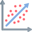

About me
I'm a mixed-methods UX researcher with over four years of experience and a passion for fostering empathy across teams. My research approach is collaborative, impact-driven, and fast-paced.
I specialize in blending qualitative and quantitative techniques—leveraging SQL, inferential statistics, and machine learning to complement qualitative insights and maximize impact. With experience at Instacart, Instagram, and Shopify, I thrive in fast-paced environments and engage with diverse stakeholders throughout the research cycle.
Outside of work, I'm an outdoor enthusiast, culture lover, and home chef. You’ll often find me in the ocean surfing, in the woods chasing sunrises and sunsets with my camera, or at home researching new recipes.
Download my resumeMy Research Toolbox
-
In-depth Interviews
-
Ethnographic Study
-
Diary Study
-

Concept Testing
-
Cart Sorting
-
Journey Mapping
-
Survey Design
-
Exploratory Data Analysis
-

Inferential& Multivariate Statistics
-
Choice Modeling
-
Machine Learning
-
A/B testing